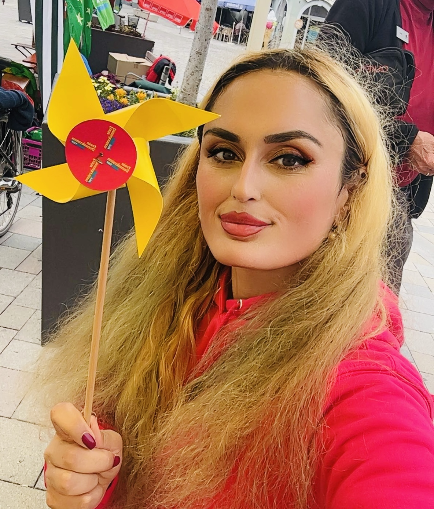
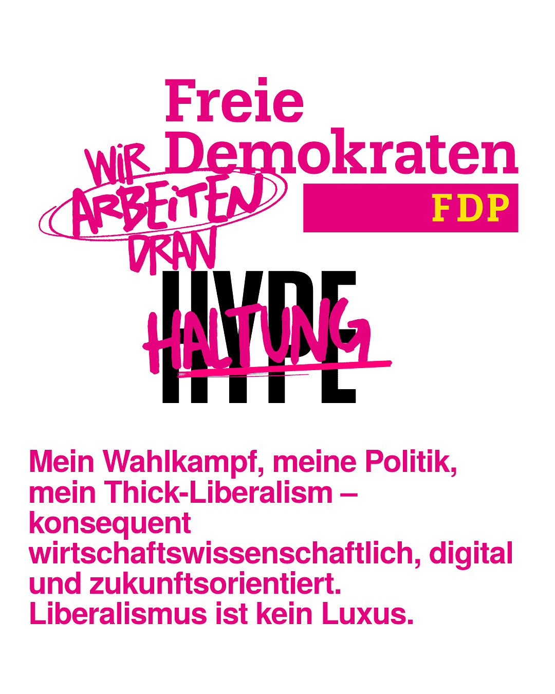

Selfie bei Run4Europe, Mai 2025

Digitaler Wahlkampf 2026, Wahlkreis 46
Über mich
📱 Mehr über meinen digitalen Wahlkampf erfahren

Scannen Sie den QR-Code für mein persönliches Kennenlern-Video.
Als engagierte Bürgerin und Studentin der Wirtschaftsinformatik weiß ich, wie komplex politische Prozesse geworden sind. Besonders deutlich wurde dies bei der Bundestagswahl am 23. Februar 2025.
Vor diesem Hintergrund führe ich meinen Wahlkampf vollständig digital und ressourcenschonend. Ich pflege Social-Media-Kanäle selbst, beantworte Anfragen und besuche Veranstaltungen nur auf Einladung.
- Nachhaltigkeit & Umweltschutz: Keine physischen Stände oder Giveaways → Papier, Druckfarbe und Transport werden eingespart, CO₂-Ausstoß reduziert.
- Zeitgemäße Kommunikation & Bildungskompetenz: Ich pflege meine Social-Media-Kanäle selbst und beantworte alle Anfragen, auch wenn es in der heißen Wahlkampfphase zu Verzögerungen kommt.
- Gezielte physische Präsenz: Veranstaltungen besuche ich nur auf Einladung, um persönlichen Austausch zu ermöglichen.
- Gesellschaftliche Realität: Berufstätige haben tagsüber kaum Zeit für Stände. Junge Menschen informieren sich online – abends auf Handy oder Laptop. Mein Konzept sorgt für maximale Reichweite und Bürgernähe bei minimalem Ressourceneinsatz.
- Wirtschaftswissenschaftlicher Liberalismus: Mein Liberalismus ist kein Luxus, sondern gelebte Verantwortung. Effiziente Ressourcennutzung, Innovationsförderung, gesellschaftliche Nachhaltigkeit und Transparenz prägen meinen Wahlkampf. Umwelt- und Bildungsthemen sind mir zentral.
- Verantwortung & Vorbildfunktion: Mein Wahlkampf zeigt, dass Politik modern, effizient, ressourcenschonend und zukunftsorientiert gestaltet werden kann.
Ich freue mich auf konstruktives Feedback. Mein Ziel: ein Wahlkampf, der transparent, effektiv, nachhaltig und integrativ ist.
🔎 Was bedeutet Thick-Liberalism?
Unter Thick-Liberalism verstehe ich einen Liberalismus, der nicht nur theoretisch gefordert, sondern auch praktisch gelebt wird: konsequent wirtschaftswissenschaftlich, nachhaltig und transparent. Es geht darum, Freiheit nicht als Luxus zu begreifen, sondern als Verantwortung – im Umgang mit Ressourcen, in der Förderung von Innovation und in der Stärkung von Bildung.
Ich versuche nach bestem Wissen und Gewissen, diesem Ansatz zu folgen. Gelingt es immer? Vielleicht nicht – aber der Anspruch, Politik ehrlich, verantwortungsvoll und zukunftsorientiert zu gestalten, ist für mich verbindlich.
🌍 Herkunft & Ankunft in Deutschland
Ich wurde 1989 im Irak (autonome Region Kurdistan) geboren und bin 1996 mit meiner Familie nach Deutschland geflohen.
Ich liebe mein Herkunftsland und damit meine ich Kurdistan, ein Land, das bisher keine Anerkennung gefunden hat, obwohl wir alle internationalen Kriterien erfüllen.
Alle Teile Kurdistans leiden massiv unter der Spaltung, wie einst Deutschland auch litt.
Aus kurdischer Sicht sehe ich wie die Gier nach Macht die Menschen verdorben hat. Solange eine Seele auf der Erde leidet, leiden meiner Meinung nach alle gleichermaßen nur das Leid zeigt sich anders, manifestiert sich in das, was man niemals haben kann, solange Gier vorherrscht.
Natürlich würde ich viel lieber in Kurdistan Politik machen und Europa den Rücken kehren, denn das Leben als Frau ist hier schwer. Man darf Bildung genießen, aber arbeiten wird bezahlt, als ob man nicht so leistungsfähig wie Männer wäre. Das ist ein großer Trugschluss und gehört strengstens geahndet. Man gaukelt den armen Frauen vor, liberal zu sein, aber am Ende verdienen sie weniger als Männer, obwohl manche mehr leisten, wie ich zum Beispiel.
🏡 Leben & Integration in Freiburg
2024 bin ich aus beruflichen Gründen nach Baden-Württemberg gezogen und lebe nun in Freiburg.
Marianne Schäfer und Karl-Heinz Rontke, der Bürgermeister von Eisenbach, haben mich mehr als herzlich willkommen geheißen und nun bin ich Wahlkreiskandidatin. Die FDP kann integrieren, daher müssten die anderen Parteien verlieren.
Vorausgesetzt der Kampf, den ich hier gegen Faschismus wahrnehme, ist ernst und kein Melodrama wie es sich immer wieder in den Nachrichten herauskristallisiert.
Mir ist bewusst, dass die FDP Dinge gesagt hat, die der rechten Sparte eher dienlich sind, als dass sie für die FDP schicklich sind.
Da ich Wahlkreiskandidatin bin, nehme ich an, dass das nicht so gemeint war und möchte die Menschen in Freiburg animieren es doch über die Landtagswahlen noch einmal zu versuchen, bevor sie der FDP gänzlich den Rücken kehren.
🗳️ Politische Motivation & Werte
Mein Ziel: Eine freie, offene und inklusive Gesellschaft. Ich stehe für nachhaltigen Liberalismus und digitale Bildung.
Christian Lindner war mein Ansporn – mein Ziel: eine freie und offene Gesellschaft.
Für mich ist klar: Hass und Hetze gegen Ausländer sind keine Meinungsfreiheit, sondern ein Zeichen dafür, dass Menschen sich fremden Kulturen verschließen. Gerade in einer globalisierten Welt brauchen wir Ansätze, die ein Miteinander über Grenzen hinweg ermöglichen – wirtschaftlich, politisch und gesellschaftlich.
Als jemand, der internationale Bildung genossen hat, bin ich eine große Verfechterin der Meinungsfreiheit. Nur so kann ein respektvolles Miteinander funktionieren. Gleichzeitig zeigt meine Erfahrung, dass das deutsche Bildungssystem – Bachelor und Master – nicht vollständig mit den Freiheitsprinzipien des Grundgesetzes vereinbar ist: Studierende lernen viele Freiheiten im Studium, doch deren Umsetzung und das Verständnis dieser Rechte im Alltag sind oft unklar.
Ich sehe mich gezwungen, dieses Thema unter Inklusion und Chancengleichheit zu behandeln. Es ist kein Wunder, dass immer mehr topausgebildete Personen ins Ausland gehen, wenn Freiheit und Chancen eingeschränkt sind. Wer frei denken will, muss auch die gleichen Möglichkeiten erhalten und inkludiert werden, statt dass man sich verschließt.
In den USA gilt: Fremde Grundstücke zu betreten, ist verboten (Trespassing, z. B. California Penal Code §602, New York Penal Law §140, Texas Penal Code §30.05). Eigentümer dürfen den Eindringling auffordern zu gehen, die Polizei rufen oder in manchen Staaten im Rahmen der Castle Doctrine mit verhältnismäßiger Gewalt abwehren – Schusswaffen nur bei unmittelbarer Lebensgefahr. Das zeigt: Gesetze schützen Eigentum, gleichzeitig ist die Freiheit der Person klar geregelt.
Übertragen auf Bildung und Meinungsfreiheit in Deutschland bedeutet das: Studierende und Akademiker brauchen gleiche Chancen und Freiheit, um sich zu entfalten. Schon eine einfache Beleidigung kann hierzulande strafbar sein, während in anderen Ländern die Redefreiheit weiter reicht. Wer international ausgebildet ist, spürt diese Unterschiede besonders und sucht nach Systemen, die Freiheit, Verantwortung und Chancen verbinden.
Darum fordere ich:
- Kritische Überprüfung der Bologna-Reform, mit Möglichkeit, das Diplom wieder einzuführen und akademische Tiefe zu bewahren.
- Ausweitung der Meinungsfreiheit, insbesondere bei Beleidigungen, um Studierende, Akademiker und Bürger zu entlasten und gleichberechtigt zu inkludieren.
Ein halbes System genügt nicht: Wer Strukturen importiert, muss auch die dahinterstehenden Werte reflektieren. Nur so entsteht ein glaubwürdiges, freiheitliches und inklusives Bildungssystem.
Servus Gerechtigkeitssinn.
🎨 Hobbys & Inspiration
Joggen, Gedichte schreiben und Natur sind meine Kraftquellen. Besonders inspirierend finde ich historische Persönlichkeiten, die trotz Widrigkeiten liberal und freiheitlich gehandelt haben.
👨👩👧👦 Familie & Kindheitserfahrungen
Meine Familie hat mich geprägt. Werte wie Respekt, Bildung und Eigenverantwortung wurden früh vermittelt. Ich möchte diese Prinzipien in meinen politischen Ansatz übertragen.
💡 Warum FDP? Meine Werte
Die FDP steht für Eigenverantwortung, Freiheit, Technologieoffenheit, Bildung und Nachhaltigkeit. Diese Werte entsprechen meiner Philosophie und meinem Wahlkampfansatz.
Freiheit, Familie, Bildung – dafür stehe ich ein, dafür weite ich meine Lippen. Besonders die Förderung von Frauen in MINT-Bereichen liegt mir am Herzen.
Meine Mission: Femistruktion zu erkennen, dafür zu sensibilisieren – und festgefahrene Strukturen in ihrem Kern agil zu machen.
Begriff und Konzept entwickelt von Heschu Hasan im Kontext der Sichtbarmachung struktureller Ungleichheiten im MINT-Bereich.